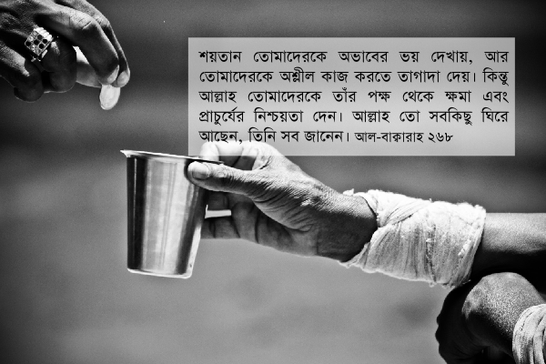

আমরা যখন যাকাত দেওয়ার সময় হিসেব করে দেখি কত যাকাত দিতে হবে, তখন ভাবি, “এত্ত গুলো টাকা দিয়ে দিতে হবে! এত টাকা যাকাত দিয়ে কী হবে? মানুষের অভাবের তো কোনো শেষ নেই। যত দিবো, তত চাইবে।” — যাকাতের পরিমাণ দেখে আমাদের আফসোস শুরু হয়ে যায়, অথচ ভেবে দেখি না যে, এটা হচ্ছে আমাদের সম্পত্তির মাত্র ২.৫%অংশ, খুবই নগণ্য পরিমাণ। বাকি বিশাল ৯৭.৫% অংশ সম্পত্তি আমাদের জমা হয়ে আছে। যাকাত দেওয়ার সময় আমাদের শুধু আফসোস হয় যে, কতগুলো টাকা বের হয়ে গেলো। সেই টাকা না দিলে কত কিছু কিনতে পারতাম, কত কিছু করতে পারতাম। অথচ চিন্তা করে দেখি না যে, আল্লাহ تعالى আমাদেরকে এত সম্পত্তি দিয়েছেন যে, তার এক নগণ্য অংশও আমাদের কাছে এত বেশি মনে হচ্ছে —এই ধরনের চিন্তাগুলো আসে শয়তানের কাছ থেকে, কারণ আল্লাহ تعالى বলেছেন—
শয়তান তোমাদেরকে অভাবের ভয় দেখায়, আর তোমাদেরকে অশ্লীল কাজ করতে তাগাদা দেয়। কিন্তু আল্লাহ তোমাদেরকে তাঁর পক্ষ থেকে ক্ষমা এবং প্রাচুর্যের নিশ্চয়তা দেন। আল্লাহ তো সবকিছু ঘিরে আছেন, তিনি সব জানেন। [আল-বাক্বারাহ ২৬৮]
আমরা যখন আল্লাহর تعالى পথে দান করতে যাই, তখন আমাদের মনে নানা ধরনের চিন্তা আসা শুরু হয়ে যায়, “বাড়ি ভাড়া দেওয়ার টাকা থাকবে? ছেলে মেয়েদের পড়ার খরচ দিতে পারবো? ঈদের শপিং করতে পারবো?” অথচ যখন শপিং মল বা রেস্টুরেন্টে যাই, আমরাই তখন দেদারসে টাকা উড়াতে থাকি। তখন আমাদের মাথায় বাড়ি-ভাড়া, সন্তানের ভবিষ্যৎ-এর কথা মাথায় আসে না। যে লোক মসজিদের দান বাক্সে একশ টাকা দিবে না দশ টাকা দিবে এই নিয়ে নিজের মধ্যে যুদ্ধ করতে থাকে, সেই মানুষই সিনেমা, টিভি, রংবেরঙের পানীয়, দামি খাবার, ব্রান্ড কাপড়, বিদেশে বেড়াতে যাওয়া — এসবের জন্য দুহাতে টাকা খরচ করতে একটুও বাধে না।[১৭]

আল-বাক্বারাহ’র এই আয়াতে আল্লাহ تعالى বিশেষভাবে বলছেন যে, শয়তান আমাদেরকে ٱلْفَحْشَآء ফাহশা’ এর দিকে ডাকবে। ফাহশা’ হচ্ছে যে কোনো লজ্জাহীন, অশ্লীল এবং অনৈতিক কাজ, যেমন, বিপরিত লিঙ্গের (বা সমলিঙ্গের) অবৈধ কারো সাথে করা যাবতীয় অশ্লীল কাজ।[১১][১৬] ফেইসবুকে বিপরীত লিঙ্গের দিকে পশুর মত কামুক দৃষ্টিতে তাকিয়ে থাকা। হিন্দি, ইংরেজি মুভি দেখা, যেখানে নারী পুরুষদের অশ্লীলভাবে দেখানো হয়। পরকীয়া এবং অশ্লীল আবেদনে ভরা হিন্দি, ইংরেজি, বাংলা গান শোনা। সবশেষে একেবারেই পশুর থেকেও অধম হয়ে গিয়ে পর্ণ দেখা, সমকামিতা, ব্যভিচারে জড়িয়ে পড়া —এই সব কিছু ফাহশা’র মধ্যে পড়ে।
শয়তান জানে যে, আমাদের সবচেয়ে বড় দুর্বলতা হচ্ছে বিপরীত (বা সম) লিঙ্গের প্রতি কামনা। তাই এই দুর্বলতাকে কাজে লাগানোর জন্য ওরা কোটি কোটি ডলারের বিশাল মুভি, মিউজিক, পর্ণ বাণিজ্য সাম্রাজ্য তৈরি করেছে। সকালে ঘুম থেকে উঠে রাতে ঘুমাতে যাওয়া পর্যন্ত আমরা যেন প্রতিক্ষণে ফাহশা’র কোনো না কোনো হাতছানি দেখতে পাই, সেজন্য ওরা খবরের কাগজ, ম্যাগাজিন, টিভি, রেডিও, মোবাইল ফোন, কম্পিউটার, ইন্টারনেট, রাস্তায় বিলবোর্ড —সব দখল করে রেখেছে। বিংশ শতাব্দীতে যোগাযোগের যত আধুনিক প্রযুক্তি তৈরি হয়েছে, তার বেশিরভাগই আজকাল ওরা ব্যবহার করছে ফাহশা’র মধ্যে আমাদের বুঁদ করে রাখার জন্য।
ফাহশা’র একটি বৈশিষ্ট্য হলো: আমরা প্রথম যখন খারাপ কিছু দেখি, তখন চোখে খুব লাগে। কিন্তু যখন বার বার দেখতে থাকি, তখন আস্তে আস্তে চোখ সয়ে আসে। একসময় সেটা আর খারাপ লাগে না। একারণেই মিডিয়াতে ফাহশা’কে ধীরে ধীরে নোংরা থেকে নোংরাতর করা হয়। দেশে যখন কেব্ল টিভি প্রথম এসেছিল, আমরা তখন পাশ্চাত্যের অশালীন পোশাক, আচার-আচরণ দেখে বিরাট ধাক্কা খেয়েছিলাম। একসময় তা আমাদের সহ্য হয়ে গেল। আমরা ভাবতাম ওরা নষ্ট হয়ে গেছে, আমরা এখনও ভালো আছি। তারপর একসময় আমরা ওদের অনুকরণ করে নষ্ট হয়ে গেলাম। প্রথম দিকে যখন দেখতাম আমাদের কিছু ছেলে-মেয়ে পাশ্চাত্যের নকল করছে, তখন ধাক্কা লাগতো। একসময় সেটাও গা সওয়া হয়ে গেলো। আজকাল রেস্টুরেন্ট, ক্লাব, ইউনিভারসিটি, কনসার্টে গেলে, বা টিভিতে সাবান, শ্যাম্পুর বিজ্ঞাপন দেখলে বোঝা যায় না এটা বাংলাদেশ, নাকি নষ্ট সংস্কৃতিতে ধ্বসে যাওয়া পাশ্চাত্যের কোনো দেশ। এভাবেই ফাহশা’ মানুষকে ধীরে ধীরে বেহায়া বানিয়ে দেয়।
শয়তান তোমাদেরকে অভাবের ভয় দেখায়, আর তোমাদেরকে অশ্লীল কাজ করতে তাগাদা দেয়
অভাবের সাথে ফাহশা‘র সম্পর্ক কি?
শয়তান যখন মানুষকে অভাবের ভয় দেখিয়ে দান করা থেকে দূরে রাখতে পারে, তখন সে মানুষের উপর জিতে যায়। চারিদিকে এত অভাব, এত মানুষের কষ্ট, মানুষের পাশে দাঁড়ানোর এত সুযোগ, আল্লাহর تعالى পথে খরচ করার এত ব্যবস্থা —এগুলো সব দেখেও মানুষ যখন প্রতিটা দিন শয়তানের কথা শুনে চোখ-কান বন্ধ করে রাখতে পারে, সে তখন তার বিবেকের চাবি শয়তানের হাতে দিয়ে দেয়। একবার শয়তান যখন কারও বিবেককে অন্ধ করে দিতে পারে, তখন সে তাকে দিয়ে সহজেই অশ্লীল কাজ করিয়ে নিতে পারে। আল্লাহর تعالى পথে দান করা থেকে আটকানো হচ্ছে মানুষের বিবেকের উপর জয়ী হয়ে যাওয়ায় এক ধাপ এগিয়ে যাওয়া। শয়তান যখন এভাবে বিবেকের নিয়ন্ত্রণ দখল করে নিতে পারে, তখন সে মানুষকে দিয়ে অতি সহজে অশ্লীল কাজ করাতে পারে।[১১]
সুতরাং আল্লাহর تعالى পথে খরচ করা হচ্ছে আমাদের জন্য এক মানসিক যুদ্ধ। আমরা যখন এই যুদ্ধে জয়ী হই, তখন শয়তানের কুমন্ত্রণার হাত থেকে নিজেদেরকে বাঁচানোর জন্য আরও শক্তিশালী হই। এভাবে আমাদের ঈমানের জোর বাড়ে, আমরা নিজেদেরকে অশ্লীল কাজ থেকে তত বেশি দূরে রাখতে পারি। যারা নিজেদেরকে অশ্লীল কাজ থেকে দূরে রাখতে পারছেন না, তাদের আসল সমস্যা হচ্ছে তাদের বিবেকের আসনে আর তিনি বসে নেই, বসে আসে শয়তান। সুতরাং প্রথমে নিজের ভেতরে যুদ্ধ করে আগে সেই শয়তানকে দূর করতে হবে। আর এর জন্য এক মোক্ষম উপায় হচ্ছে আল্লাহর تعالى পথে খরচ করা, যত কষ্টই হোক না কেন, যত দুশ্চিন্তাই আসুক না কেন, যতই ভয় লাগুক না কেন।
একইসাথে শয়তান অভাবের ভয় দেখিয়ে আমাদেরকে দিয়ে নোংরা কাজ করায়। যেমন, ইন্টার্ভিউ দিতে যাওয়ার সময় হিজাব ছেড়ে বা দাঁড়ি কেটে যাওয়া, কারণ যদি চাকরি না মেলে? চাকরি হারানোর ভয়ে অফিসে কখনও হিজাব না পড়া, বা দাঁড়ি বড় না করা, এমনকি বসের সাথে রেন্সটুরেন্টে, পার্টিতে গিয়ে আপত্তিকর কাজেও অংশ নেওয়া। প্রমোশন হাত ছাড়া হয়ে যাওয়ার ভয়ে উপরের তলার নোংরা কাজের খবর জেনেও চেপে যাওয়া। —এভাবে শয়তান আমাদেরকে অভাবে ভয় দেখিয়ে অশ্লীল কাজ করাতে থাকে।
শয়তান কখনও আপনাকে এসে বলবে না, “আমি শয়তান। আমি তোমাকে জাহান্নামে পুড়াতে চাই। আসো আমরা ইয়ে করি।” ইবলিস এবং অন্যান্য জিন শয়তানরা মানুষের কাছে অদৃশ্য প্রাণী। তারা বিজ্ঞানের ভাষায় বলতে গেলে ‘প্যারালাল ইউনিভার্স’ বা ‘অন্য ডাইমেনশন’-এ থাকে, যেখান থেকে তারা ঠিকই আমাদেরকে দেখতে পায়, কিন্তু আমরা তাদেরকে দেখতে পাই না, বা কোনো বৈজ্ঞানিক যন্ত্র দিয়ে সনাক্ত করতে পারি না।
সে এবং তার অনুসারিরা তোমাদেরকে তাদের জায়গা থেকে দেখতে পায়, কিন্তু তোমরা তাদেরকে দেখতে পাও না। [আল-আ’রাফ ৭:২৭]
শয়তান মানুষের অবচেতন মনে কুচিন্তা বা কুমন্ত্রণা ঢুকিয়ে দেয়। আমরা সাবধানে লক্ষ্য করলেও বুঝতে পারবো না: আমাদের মনের গভীরে যে চিন্তাগুলো চলছে, তার কোনটা আমি, আর কোনটা শয়তান। সূরা আন-নাস-এ আল্লাহ تعالى আমাদেরকে বলেছেন, কীভাবে শয়তান কাজ করে—
(আমি আশ্রয় চাই) তার অনিষ্ট থেকে, যে নিজেকে লুকিয়ে রেখে কুমন্ত্রণা দেয়। যে কুমন্ত্রণা দেয় মানুষের অন্তরে। জ্বিনের মধ্য থেকে এবং মানুষের মধ্য থেকে। [আন-নাস ১১৪:৪-৬]
এই আয়াতে আল্লাহ تعالى আমাদেরকে জানিয়ে দিচ্ছেন যে, শয়তান শুধুই জ্বিন নয়। ইবলিস এবং তার উদ্দেশকে বাস্তবায়ন করতে যে সব মানুষ সাহায্য করে, তারাও শয়তান।
শয়তান এমন কৌশলে আমাদের মনে কু-চিন্তা, অসুস্থ কামনা ঢুকিয়ে দেয় যে, আমরা মনে করবো: সেগুলো আসলে আমাদের নিজেদেরই চিন্তা-ভাবনা, আবেগ এবং অনুভুতি। যেহেতু আমরা সবসময় শয়তানের ব্যাপারে সাবধান থাকি না, তাই কখন যে শয়তান আমাদের মধ্যে তার কুমন্ত্রণা ঢুকিয়ে দিয়ে, আমাদেরকে দিয়ে তার কাজ করানো শুরু করে দেয়, তা আমরা ভুলে যাই। একারণেই আল্লাহ تعالى আমাদেরকে সাবধান করেছেন—
যারা আল্লাহর প্রতি সচেতন থাকে, যখনি তাদের মনে শয়তান কোনো কু-চিন্তা দেয়, তারা সাথে সাথে আল্লাহকে স্মরণ করে এবং তখনি তারা পরিস্কার দেখতে পায় আসলে কী ঘটছে। [আল-আ’রাফ ৭:২০১]
আল্লাহ تعالى আমাদেরকে একটা চমৎকার ফর্মুলা শিখিয়ে দিয়েছেন: কীভাবে শয়তানকে প্রতিহত করতে হবে। যখনি অনুভব করা শুরু করবেন যে, আপনি যেই কাজটা করছেন, তা করা ঠিক হচ্ছে না, সাথে সাথে আল্লাহর تعالى কথা মনে করুন। মনে মনে বুঝে বলুন, “আউ’যু বিল্লা-হি মিনাশ শাইত-নির রজীম” – “আমি আল্লাহর কাছে আশ্রয় চাই বিতাড়িত শয়তান থেকে”। দ্রুত কোনো কু’রআনের আয়াত মনে করার চেষ্টা করুন, যেটা আপনার পরিস্থিতির সাথে মিলে যায়। যেমন: আপনি কারও প্রতি দুর্বলতা অনুভব করছেন, এমন দিকে তাকাচ্ছেন যেদিকে আপনার তাকানোর কথা না, সাথে সাথে নিজেকে মনে করিয়ে দিন—
বিশ্বাসী পুরুষদেরকে বলো যেন, তারা তাদের দৃষ্টি নত রাখে এবং তাদের গোপন অঙ্গকে সাবধানে রক্ষা করে, এটা তাদের জন্যই বেশি কল্যাণকর। আল্লাহ খুব ভালো করে জানেন তোমরা কী করো। বিশ্বাসী নারীদেরকে বলো, যেন তারা তাদের দৃষ্টি সংযত রাখে এবং তাদের গোপন অঙ্গকে সাবধানে রক্ষা করে … [নুর ২৪:৩০]
তবে দরকারের সময় জরুরি কোনো আয়াত মনে করাটা খুব কঠিন, যদি না আমরা নিয়মিত কিছু জরুরি আয়াত ঝালিয়ে না নেই। এজন্য নিয়মিত কু’রআন পড়াটা জরুরি। আর সবচেয়ে বেশি দরকার কু’রআন বুঝে পড়া। বুঝে কুর’আন না পড়লে আমরা কোনোদিন জানবো না: আল্লাহ تعالى আমাদেরকে কত পদ্ধতি শিখিয়েছেন, কত ব্যাপারে সাবধান করেছেন।
আল্লাহ তোমাদেরকে তাঁর পক্ষ থেকে ক্ষমা এবং প্রাচুর্যের নিশ্চয়তা দেন
আল্লাহ تعالى আমাদেরকে কথা দিয়েছেন যে, যদি আমরা তাঁর পথে দান করি, তাহলে তিনি আমাদেরকে فضل অর্থাৎ প্রাচুর্য দেবেন। ফাদল এই দুনিয়াতেও দেবেন, আখিরাতেও দেবেন। আল্লাহ تعالى দুটোই আমাদেরকে দেবেন বলে কথা দিয়েছেন।[১৪] অনেকের কাছে মনে হয়, আখিরাত সেই কবে আসবে, কিছু পাবো কি পাবো না তার ঠিক নেই, তাই দুনিয়াতে ঝুঁকি নিয়ে দান করার দরকার নেই। তাদের জন্য সুখবর। আল্লাহ تعالى আমাদেরকে শুধু আখিরাতে দেবেন বলেননি, দুনিয়াতেও দেবেন বলে কথা দিয়েছেন।
আল্লাহর تعالى বাণী আজকাল আমাদের কাছে মূল্যহীন। আল্লাহ تعالى যখন বলেন যে, তিনি আমাদেরকে গ্যারান্টি দিয়েছেন যে, তিনি আমাদেরকে অনেক দেবেন, যদি কিনা আমরা তাঁর পথে খরচ করি, তাঁর এই গ্যারান্টি শুনেও আমাদের সন্দেহ যায় না। যদি না পাই? যদি আরও গরিব হয়ে যাই? যদি দান করে কোনো লাভ না হয়? — এই সব সন্দেহের মধ্যে ঘুরতেই থাকি। আজকাল মুসলিমদের কাছে কোনো ধনী দেশের প্রেসিডেন্টের আশ্বাসের বাণীর অনেক দাম আছে। যখন আমেরিকার প্রেসিডেন্ট মুসলিমদের নিয়ে ভালো কিছু বলে, তাদেরকে কোনো ব্যাপারে সমর্থন করে, তখন মুসলিমরা সে কী খুশি! শান্তিতে তাদের বুক ভরে যায়। অথচ আল্লাহ تعالى যখন কুর‘আনে বলেন যে, তিনি অবশ্যই বিশ্বাসীদের এবং সবরকারীদের পাশে আছেন —তখন আমাদের কিছু যায় আসে না। আজকাল আমাদের কাছে আমেরিকার প্রেসিডেন্টের দেওয়া কথার দাম, আল্লাহর تعالى দেওয়া আস্থার থেকে বেশি দামি হয়ে গেছে।
যার হাতে সমস্ত সম্পদ, যিনি সবাইকে নিয়ন্ত্রণ করছেন, যিনি যে কোনো সময় মানুষের পরিকল্পনা ভেস্তে দিতে পারেন, যে কোনো ধনী ব্যক্তিকে পথে বসিয়ে দিতে পারেন, পথের ফকিরকে রাতারাতি ধনকুবের বানিয়ে দিতে পারেন, সেই মহাশক্তিশালী প্রভু আমাদেরকে কথা দিয়েছেন যে, আমরা যদি তাঁর পথে খরচ করি, তাহলে তিনি আমাদেরকে অনেক দেবেন। এরপরেও যদি কেউ আল্লাহর تعالى পথে খরচ করতে হাজার অজুহাত দাঁড় করায়, তাহলে তার থেকে সাবধান থাকতে হবে। শয়তান তার উপর দখল নিয়ে নিয়েছে।
কিছু মানুষ আছে যাদের উপর শয়তান পুরোপুরি দখল করে নিয়েছে। এধরনের মানুষের চিন্তা-ভাবনা, কাজকর্ম, অনুভুতি, আবেগ– সবকিছুই শয়তানের দখলে চলে গেছে। এরা কথা বললে খারাপ কথা বলে, যা শুনলে মানুষ কষ্ট পায়, বিভ্রান্ত হয়ে যায়, মানুষে মানুষে সমস্যা তৈরি হয়। এদের কাজগুলো বেশিরভাগই হারাম কাজ। যেমন: টিভি দেখলে এরা দেখে তারকাদের সাক্ষাতকার, মিউজিক শো, ড্যান্স কম্পিটিশন, নানা ধরণের অসুস্থ সিরিয়াল। মুভি দেখলে দেখে সব মারামারি, খুনাখুনি, বিকৃত হরোর মুভি, না হয় হারাম প্রেম-ভালবাসা, পরকীয়ার মুভি। খবরের কাগজে এরা সব হারাম খবর পড়ে: কে কবে কাকে কী গালি দিলো, কোন তারকাকে নিয়ে কী স্ক্যান্ডাল চলছে, কোন পাতায় কোন মডেলের ছবি আছে। কম্পিউটারে বসলে এরা চুরি করা সফটওয়্যার ব্যবহার করে। ইন্টারনেটে গেলে এরা বেশিরভাগ সময় পর্ণ, সিনেমা, সিরিয়াল; না হয় ফেইসবুকে পরকীয়া, অবৈধ মেলামেশা, ডেটিং সাইটে মিথ্যা যোগ্যতা দিয়ে অন্যদেরকে পটানোর চেষ্টা করে। মোবাইল ফোনে বন্ধু-বান্ধবের সাথে ঘণ্টার পর ঘণ্টা গীবত, এর কথা ওকে লাগানো, গোপন খবর ফাঁস করে দেওয়া ইত্যাদি।
এভাবে এরা প্রতিদিন ঘুম থেকে উঠার পর থেকে ঘুমাতে যাওয়া পর্যন্ত যত ধরণের শয়তানী কাজ করা যায়, তার সবই করে। এরা তাদের মস্তিস্কের নিয়ন্ত্রণ শয়তানের হাতে দিয়ে দিয়েছে। তাদের অন্তরের ভেতরে চালকের আসনে আর তার বিবেক বসে নেই। বসে আছে শয়তান। এদের সম্পর্কে আল্লাহ تعالى বলেছেন—
শয়তান এদের উপরে নিয়ন্ত্রণ নিয়ে নিয়েছে এবং তাদেরকে আল্লাহর কথা ভুলিয়ে দিয়েছে। এরা শয়তানের দল। সাবধান! এই শয়তানের দল একদিন ধ্বংস হয়ে যাবেই। [মুজাদিলা ৫৮:১৯]
এই ধরণের মানুষদের সম্পর্কে সাবধান। আল্লাহ تعالى এদেরকে শয়তানের দল হিসেবে চিহ্নিত করেছেন। এরা আর সাধারণ মানুষ নেই। আল্লাহর দৃষ্টিতে এরা মানুষরূপী শয়তান। সে আপনার বাবা-মা, ভাইবোন, ছেলে-মেয়ে যেই হোক না কেন। সাবধানে থাকবেন, যেন তাদেরকে সন্তুষ্ট করতে গিয়ে, বা তাদের সাথে তাল মিলিয়ে চলতে গিয়ে, আপনি আল্লাহকে تعالى সন্তুষ্ট রাখার কথা ভুলে না যান, আল্লাহর تعالى বিরুদ্ধে কাজ করা শুরু না করেন।
আপনাকে সবসময় মনে রাখতে হবে, আপনি পৃথিবীতে এসেছেন আল্লাহকে تعالى খুশি রেখে নিজের ভালো দ্বারা পরকালের পাথেয় সংগ্রহ করার জন্য। আল্লাহর تعالى বিনিময়ে অন্যদেরকে খুশি রাখার জন্য নয়। তাই কখনও আপনার নষ্ট হয়ে যাওয়া স্বামী বা স্ত্রীর জন্য নিজের জীবন শেষ করে দিবেন না। কখনও বাবা-মার অন্যায়ের সমর্থনে নিজেকে এবং নিজের পরিবারকে শেষ করবেন না। মানুষরূপী শয়তান বসের হয়ে জঘন্য কাজ করে নিজের উপরে আল্লাহর تعالى আক্রমণ ডেকে আনবেন না। এদের কাছ থেকে সসন্মানে, সুকৌশলে সরে আসুন, কারণ আল্লাহ تعالى আমাদেরকে সাবধান করেছেন –
তুমি এমন কাউকে পাবে না, যারা সত্যিই প্রকৃতপক্ষে আল্লাহ এবং শেষ বিচার দিনে বিশ্বাস করে, কিন্তু একই সাথে তাদেরকেও ভালবাসে, যারা আল্লাহ ও তাঁর রাসুলের বিরুদ্ধে যায়। যদিও কিনা তারা তাদেরই বাবা, ছেলে, ভাই বা নিজেদের কোনো দল বা জাতির কেউ হয়। [মুজাদিলা ৫৮:২২]
[১] বাইয়িনাহ এর কু’রআনের তাফসীর। [২] ম্যাসেজ অফ দা কু’রআন — মুহাম্মাদ আসাদ। [৩] তাফহিমুল কু’রআন — মাওলানা মাওদুদি। [৪] মা’রিফুল কু’রআন — মুফতি শাফি উসমানী। [৫] মুহাম্মাদ মোহার আলি — A Word for Word Meaning of The Quran [৬] সৈয়দ কুতব — In the Shade of the Quran [৭] তাদাব্বুরে কু’রআন – আমিন আহসান ইসলাহি। [৮] তাফসিরে তাওযীহুল কু’রআন — মুফতি তাক্বি উসমানী। [৯] বায়ান আল কু’রআন — ড: ইসরার আহমেদ। [১০] তাফসীর উল কু’রআন — মাওলানা আব্দুল মাজিদ দারিয়াবাদি [১১] কু’রআন তাফসীর — আব্দুর রাহিম আস-সারানবি [১২] আত-তাবারি-এর তাফসীরের অনুবাদ। [১৩] তাফসির ইবন আব্বাস। [১৪] তাফসির আল কুরতুবি। [১৫] তাফসির আল জালালাইন। [১৬] লুঘাতুল কুরআন — গুলাম আহমেদ পারভেজ। [১৭] তাফসীর আহসানুল বায়ান — ইসলামিক সেন্টার, আল-মাজমাআহ, সউদি আরব [১৮] কু’রআনুল কারীম – বাংলা অনুবাদ ও সংক্ষিপ্ত তাফসীর — বাদশাহ ফাহাদ কু’রআন মুদ্রণ কমপ্লেক্স